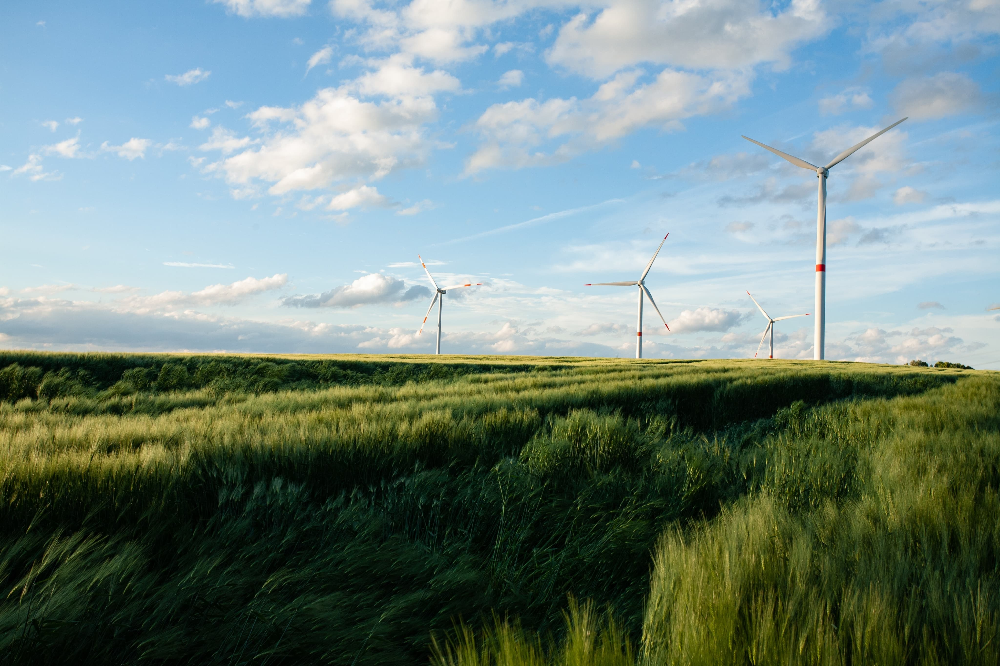
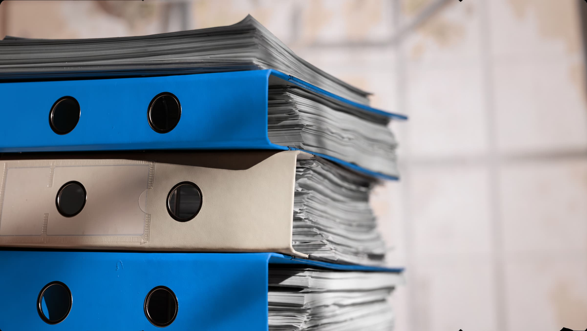

до відповідального фінансування


ТОВ «УЛФ-ФІНАНС» інтегрує принципи ESG — Environmental, Social, Governance — у діяльність Компанії та процеси прийняття рішень щодо фінансування. ESG розглядається не лише як інструмент управління ризиками, а й як основа довгострокової стійкості бізнесу, відповідального фінансування та впливу на суспільство й довкілля.
Компанія враховує, що діяльність клієнтів та об’єкти фінансування можуть впливати на навколишнє середовище, працівників, громади та інші зацікавлені сторони. Саме тому застосовується ризик-орієнтований ESG-підхід, який дозволяє своєчасно виявляти, оцінювати, моніторити та управляти потенційними екологічними, соціальними й управлінськими ризиками.
ESG-підхід ULF базується на вимогах законодавства України, принципах сталого розвитку, рекомендаціях міжнародних фінансових організацій, а також практиках відповідального фінансування та корпоративного управління.
Під час розгляду заявок на фінансування Компанія оцінює
діяльність клієнта та об’єкт
фінансування
з урахуванням ESG-факторів.
Для цього застосовуються процедури ESG Screening, а за
необхідності проводиться
поглиблена оцінка екологічних та соціальних аспектів діяльності клієнта —
Environmental
and Social Due Diligence, ESDD.

ризик-орієнтований підхід, який враховує:
- Вид економічної діяльності клієнта
- Характеристики об’єкта фінансування
- Потенційний вплив на довкілля та суспільство
- Якість корпоративного управління
- Інші релевантні фактори ризику

може встановлювати додаткові вимоги до клієнта, зокрема:
- Реалізацію коригувальних заходів
- Розробку плану екологічних та соціальних заходів — ESAP
- Надання додаткової інформації
- Виконання спеціальних умов фінансування

Важливим елементом ESG-підходу Компанії є Перелік виключень / Exclusion List. Він визначає види діяльності та операції, фінансування яких не відповідає принципам відповідального фінансування, сталого розвитку та ESG-вимогам ТОВ «УЛФ-ФІНАНС».
Компанія не здійснює фінансування діяльності, включеної до Переліку виключень, незалежно від її економічної привабливості.
Після укладення договору фінансового лізингу ТОВ «УЛФ-ФІНАНС» здійснює моніторинг дотримання клієнтом ESG-вимог, виконання погоджених заходів та своєчасного реагування на екологічні й соціальні інциденти, які можуть виникати під час реалізації проєкту або ведення господарської діяльності.
Такий ESG-підхід дозволяє підтримувати розвиток відповідального бізнесу, сприяти впровадженню принципів сталого розвитку серед клієнтів, мінімізувати ризики, підвищувати стійкість портфеля фінансування та створювати довгострокову цінність для клієнтів, партнерів, суспільства й довкілля.
та вплив

Збереження довкілля та відповідальне використання природних ресурсів є важливою складовою ESG-підходу ТОВ «УЛФ-ФІНАНС». Фінансові рішення можуть впливати на довкілля як безпосередньо через власну діяльність Компанії, так і опосередковано — через діяльність клієнтів та профінансовані активи.
ULF прагне сприяти розвитку відповідального бізнесу та враховувати екологічні аспекти під час прийняття рішень щодо фінансування. Екологічні фактори інтегруються в ESG-процеси, а клієнти заохочуються до впровадження більш екологічно відповідальних підходів у своїй діяльності.
У своїй діяльності Компанія керується вимогами
законодавства України, міжнародними
принципами відповідального фінансування, рекомендаціями міжнародних фінансових
організацій та загальновизнаними практиками
у сфері охорони
довкілля і протидії зміні клімату.
Мінімізувати негативний вплив на довкілля, підвищувати екологічну свідомість, розвивати відповідальне фінансування та враховувати екологічні ризики під час формування портфеля фінансування.
Відповідальне ставлення до довкілля
є складовою довгострокової
стійкості бізнесу
та створення цінності для клієнтів, партнерів, суспільства і майбутніх
поколінь.